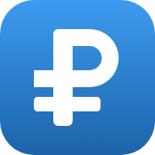

Открываю «Семейный БДДС»…
Вставьте один раз ссылку на ваше приложение — ту, что заканчивается на /exec. Она сохранится только на этом телефоне. На других телефонах вводить не придётся: готовая ссылка для них будет в приложении, в «Настройках».
Чаще всего нужно заново войти в аккаунт Google. Откройте приложение в браузере, войдите, затем вернитесь сюда и нажмите «Повторить».